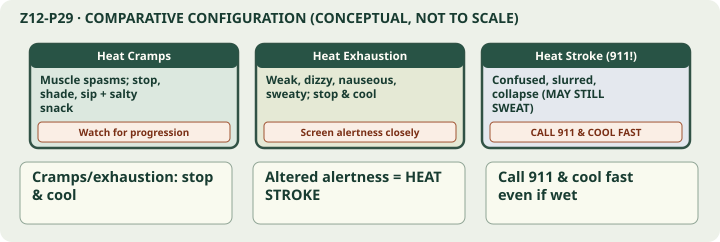

Z12-P29 · Extreme environments · New manuscript
Distinguish heat cramps, heat exhaustion and life-threatening heat stroke
Separate early reversible heat strain from the true life-threatening neurological emergency of heat stroke.
When it applies · Hot weather, humid summer work, desert travel and poorly ventilated indoor heat waves.
Equipment · Cool shaded refuge, safe water, cooling cloths/water mist and emergency 911 access.

Actions
- Recognize heat cramps (painful muscle spasms during heavy sweating—stop effort, rest in cool shade, sip water with salty snacks/electrolytes) and heat exhaustion (heavy sweating, weakness, dizziness, headache, nausea, fast pulse—stop immediately, move to cool shade/AC, loosen clothing, cool skin with wet cloths/fanning and sip safe water if alert).[E08, T05, T09]
- Recognize heat stroke (a true medical emergency!): altered mental status—confusion, slurred speech, agitation, staggering, seizures or loss of consciousness—with hot skin (skin may be dry OR still wet with sweat during exertional heat stroke!).[T05, T09]
- NEVER rule out heat stroke just because a person is still sweating—exertional heat stroke patients frequently sweat heavily while their core temperature climbs to fatal levels.[T09, T05]
Failure recognition · Mistaking a confused, stumbling, heavily sweating hiker for mild heat exhaustion and letting them rest uncooled without calling 911.[T05, T09]
Verify · Check mental status (clear speech, steady walk, normal orientation) immediately whenever anyone feels weak or nauseous in heat.[T05, T09, ED]
Stop or change course · ANY confusion, slurred speech, collapse, seizure or worsening vomiting in heat is a 911 emergency—call immediately and start rapid active cooling at once.[T05, T09, T02]
Evidence and editorial notes
- E08 · CDC · About Heat and Your Health (current web edition)
- Section: Protect yourself from heat · Conditions: Outdoor activity in hot conditions
Support: Limit exertion in hot periods, take breaks in cooler places and monitor for illness.
Limitations: High humidity reduces sweat evaporation and raises heat strain at lower air temperatures. · Conflicting evidence: None; aligns with NWS-HEAT and NIOSH-H.
Editorial note: Anchors shade, pacing, and hot-weather shelter selection. · Specialist reviewer: Heat illness and emergency medicine
Primary source · checked 2026-11-24 - T02 · American Red Cross · First Aid Steps (current web edition)
- Section: First Aid Steps > Call 9-1-1 · Conditions: Lay emergency response to unresponsiveness, abnormal breathing or severe bleeding
Support: Activate EMS and get needed equipment. Follow dispatcher directions and act within training.
Limitations: Remote locations may delay EMS arrival, requiring sustained stabilization after activation. · Conflicting evidence: None; aligns with NPS-E.
Editorial note: Mandates early emergency activation and dispatcher adherence. · Specialist reviewer: EMS and wilderness medicine
Primary source · checked 2026-11-24 - T05 · CDC NIOSH · Heat-related Illnesses (current web edition)
- Section: Heat stroke > First aid · Conditions: Heat exposure and altered mental status
Support: Heat illness may be life-threatening. Seek emergency care for suspected heat stroke and start cooling promptly.
Limitations: Delays in active cooling worsen neurologic outcomes. · Conflicting evidence: None; aligns with CDC-HEAT.
Editorial note: Core heat-emergency escalation rule. · Specialist reviewer: Emergency and wilderness medicine
Primary source · checked 2026-11-24 - T09 · CDC NIOSH · Heat-related Illnesses (current web edition)
- Section: Heat stroke > Symptoms and First aid · Conditions: Suspected heat stroke after exertion or heat exposure
Support: Confusion, slurred speech or loss of consciousness can indicate heat stroke. Call 911 and cool the person promptly.
Limitations: Exertional heat stroke can occur even in moderate ambient temperatures during heavy effort. · Conflicting evidence: None; aligns with T05.
Editorial note: Triggers immediate emergency call and cooling stop condition. · Specialist reviewer: Emergency and wilderness medicine
Primary source · checked 2026-11-24
Source lineage · CDC NIOSH heat illnesses and NWS heat; new manuscript · Classification · New manuscript.